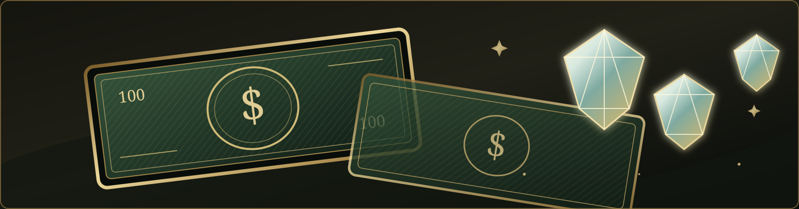
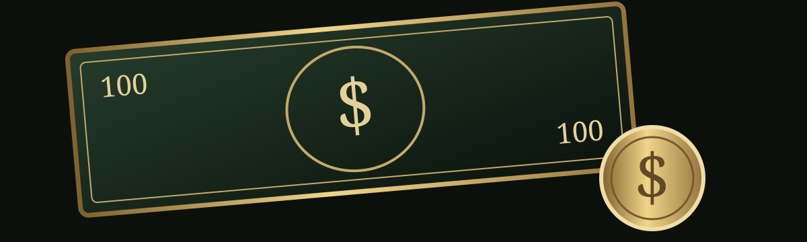

MISSION COMPLETION
00/35
مأموریتهای تکمیلشده
Discipline is a weapon. Knowledge is an advantage.
Every day is an opportunity to become more capable.
WILL I LOSE WITH
EVERYTHING I HAD?
OR WIN WITH EVERYTHING
I NEVER HAD?
هنوز بیویی ثبت نشده است.
هدف این پروژه، ساختن فردی با توانایی تحلیل، دانش کاربردی، استقلال مالی و آمادگی جسمانی است.
THE OBJECTIVE IS NOT TO LOOK DANGEROUS.
IT IS TO BECOME CAPABLE.
مأموریتها را انجام بده، وضعیتشان را تغییر بده و پیشرفتت را ثبت کن.
مأموریتی را که در حال حاضر اولویت اصلی توست انتخاب کن. هر زمان خواستی میتوانی تغییرش بدهی.
مأموریتهای شخصی در حساب ابری ذخیره میشوند و در دستگاههای دیگر هم نمایش داده خواهند شد.
برنامه هفتگی کلاسها، تقویم تحصیلی، امتحانها، مقالهها، ارائهها و یادداشتهای دانشکده.
کلاسها بعد از ثبت، از ساعت صبح تا شب مرتب نمایش داده میشوند.
یادداشتها بهصورت خودکار ذخیره میشوند.
وظایف، رویدادها و جلسات آموزشی را در یک تقویم واحد ثبت و پیگیری کن.
برای دریافت یادآوری در زمان مقرر، اعلان مرورگر را فعال کن.
در حال بررسی یادآوریها...
ثبت تمرین، قد و وزن و روند آمادگی بدنی؛ بر اساس دادههای واقعی و قابل پیگیری.
پیشرفت را با استمرار، قدرت، انرژی و روند بلندمدت بسنج؛ نه فقط عدد ترازو.
درصد چربی را فقط در صورت داشتن اندازهگیری قابلاعتماد وارد کن؛ تخمین چشمی لازم نیست.
تصاویر در فضای خصوصی حساب ذخیره میشوند و برای دیدنشان در دستگاه دیگر باید با همان حساب وارد شوی.
مرکز ثبت داراییها، حسابها و جریان نقدی شخصی؛ تمام ارزشها بر اساس تومان.

قیمت طلا را خودت بهصورت دستی بهروز کن.
هر ۱۰۰۰ سوت برابر ۱ گرم است. پارسیان ۱۸ عیار و ۷۵۰ با ضریب یک و سکههای ۹۰۰ با ضریب ۱٫۲ محاسبه میشوند. ارزش محاسبهشده فقط ارزش فلز است و حباب، اجرت یا اختلاف قیمت خریدوفروش را شامل نمیشود.

از دادههای عملیاتی و پروندههای کاری خروجی بگیر و در صورت نیاز بازیابی کن.
این نسخه شامل وظایف، پروندهها، رویدادها، جلسات آموزشی، وضعیت مأموریتها و گزارشهای روزانه است. فایلهای آرشیو خصوصی (PDF و تصاویر) جداگانه در فضای ذخیرهسازی Supabase نگهداری میشوند.
هر مهارت یک ابزار است. هر ابزار، دامنهی توانایی تو را گسترش میدهد.
منطق، تشخیص خطاهای شناختی، حل مسئله و تصمیمگیری.
شناخت رفتار انسان، حافظه، هیجان، انگیزه و فرایندهای ذهنی.
مدیریت پول، بودجهبندی، سرمایهگذاری و مدل کسبوکار.
ایمنی صحنه، ارزیابی اولیه و اصول کمک به مصدوم.
تقویت شنیدار، مکالمه، واژگان و خواندن منابع تخصصی.
پیشبینی، محاسبهی حرکتها و بررسی پیامد تصمیمها.
سطح فعلی هر مهارت را خودت مشخص کن و با پیشرفت واقعی بهروزرسانی کن.
مسیر مقدماتی برای ورود آگاهانه به علوم پزشکی و دندانپزشکی؛ از مبانی بدن انسان تا آشنایی با آموزش دانشگاهی دندانپزشکی.
فعلاً روی پایههای علمی تمرکز کن: آناتومی، فیزیولوژی، زیستشناسی سلولی و واژگان علمی انگلیسی. لازم نیست پیش از شروع دانشگاه سراغ درمان، تشخیص یا مهارتهای بالینی بروی؛ این موارد باید طبق برنامه و زیر نظر استاد آموزش داده شوند.
کتاب دانشگاهی رایگان OpenStax؛ برای شناخت دستگاههای بدن، ساختارها و عملکرد طبیعی آنها. بهترین نقطهی شروع علمی این اتاقک.
صفحهی برنامهی آموزشی دانشکده دندانپزشکی دانشگاه میشیگان؛ معرفی درس آناتومی دندان، مورفولوژی و اکلوژن در برنامهی دانشجویان دندانپزشکی.
مجموعهی منابع آموزشی آزاد دانشگاه میشیگان در موضوعاتی مانند علوم ترمیمی، اندودانتیکس، پروتز و ارتباط با بیمار.
کتابها و جزوهها را یکبار بارگذاری کن و از این بخش یا اتاق تحلیل به آنها دسترسی داشته باش.
این منابع برای آشنایی و مطالعهی مقدماتیاند؛ جایگزین سرفصل رسمی دانشگاه، تدریس استاد یا آموزش عملی و بالینی نیستند.
مرکز ثبت اصول، تحلیلها و اطلاعاتی که در طول مسیر جمعآوری میکنی.
هر ادعا را از شواهد جدا کن. میان واقعیت، برداشت و فرضیه تفاوت بگذار.
CORE PRINCIPLEرفتار را مشاهده کن؛ اما از چند نشانهی محدود دربارهی شخصیت افراد نتیجهگیری قطعی نکن.
CORE PRINCIPLEتوانایی انتخاب، مدیریت منابع و پذیرفتن مسئولیت تصمیمها را توسعه بده.
CORE PRINCIPLEبه جای تکیه بر انگیزه، سیستمهایی بساز که حتی در روزهای کمانرژی هم کار کنند.
CORE PRINCIPLEاین آرشیو یک فضای شخصی برای یادگیری است، نه ابزار نظارت یا جمعآوری اطلاعات خصوصی دیگران. تحلیل خوب بر شواهد، احترام به حریم خصوصی و تشخیص محدودیت دانستهها تکیه دارد.
برای دریافت یک سناریوی تصمیمگیری، دکمه را بزن.
برای مطالعه و ارجاع، فایلهای PDF را در یک کتابخانه خصوصی و مشترک نگه دار.
پروندههای یادگیری، ایدهها و تحقیقات ذخیرهشده را از اینجا مرور کن.
کتابها، جزوهها و منابع را یکبار بارگذاری کن؛ از همه دستگاهها و از هر دو بخش دندانپزشکی و تحلیل در دسترس خواهند بود.
فایلها در فضای ابری خصوصی ذخیره میشوند؛ حداکثر حجم هر فایل ۵۰ مگابایت.
اگر ذخیره نکنی، هایلایتها و بوکمارکهایی که در این نوبت اضافه کردی کنار گذاشته میشوند.
گزارش روزانهی خودت را ثبت کن. پس از ورود به حساب، گزارشها بهصورت ابری ذخیره و همگامسازی میشوند.
یک جملهی تازه، هر بار با یک کلیک.
برای دیدن یک نقلقول، دکمه را بزن.
اگر دنبال بهانهای، اینجا چیزی گیرت نمیآید.
آهنگها در فضای ابری خصوصی ذخیره میشوند و با ورود به حساب از هر دستگاهی در دسترساند.
با انتخاب یک آهنگ، متن آن اینجا نمایش داده میشود.
فضای خصوصی اسناد، تصاویر و یادداشتهای منتخب.
اطلاعات این بخش فقط به حساب خودت متصل است و در صفحه اصلی نمایش داده میشود.
PDF / JPG / PNG / WEBP — حداکثر ۵۰ مگابایت